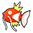

Access to:
West: Route 16
East: Route 15
Places of interest:
If the player has been to Village Bridge and caused the lady with the Patrat to appear here, the player can play a minigame once per day here.
| Pokémon | Level | Price | |
|---|---|---|---|
|
 |
Magikarp | 5 | 500 |
These Pokémon can be found sometimes by walking in a flying Pokémon's shadow.
| Pokémon | Level | Price | |
|---|---|---|---|
| Magikarp | 5 | 500 | |
| Pokémon | Level | Notes | |
|---|---|---|---|
| Cresselia | 68 | Only if the player has the Lunar Wing. If defeated or run from, she will reappear after defeating the Elite Four. |
|
These Pokémon can be found sometimes by walking in a flying Pokémon's shadow.
| Item | Location | Notes |
|---|---|---|
| Adamant Orb | Obtained from the Shadow Triad upon first crossing the bridge | |
| Lustrous Orb | Obtained from the Shadow Triad upon first crossing the bridge | |
| Griseous Orb | Obtained from the Shadow Triad upon first crossing the bridge | |
| Big Mushroom | Reward for winning the Patrat minigame | It can be obtained once a day. |
The following items can be found by stepping in a flying Pokémon's shadow.
| Health Wing | Muscle Wing | Resist Wing | Genius Wing |
| Clever Wing | Swift Wing | Pretty Wing |
| Trainer | Party | Notes |
|---|---|---|
| Ace Trainer Glinda | Beheeyem lv.65 Klinklang lv.65 Alomomola lv.65 |
In Black, this is a Triple Battle; in White, it is a Rotation Battle. She can be battled once per day. She can be rebattled in a single day after defeating the Trainer on the ground floor of the Battle House. |